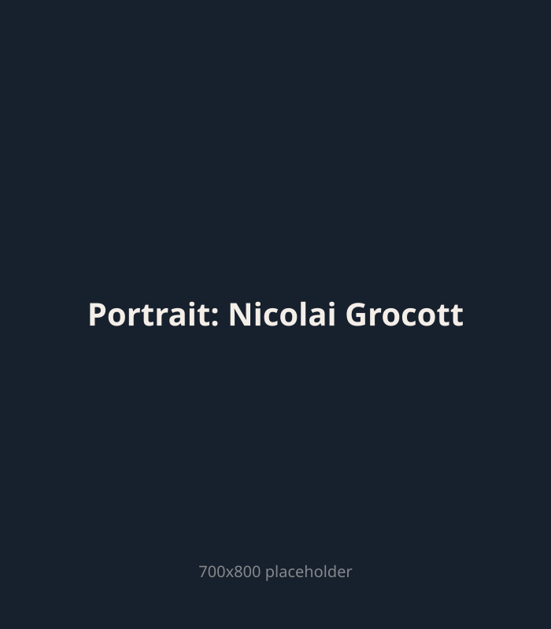

Tid til dig
Du er mere end dine rygsmerter eller nakkegener. Vi taler om hverdagen og dine mål, så vi finder en løsning der faktisk holder.

Autoriseret fysioterapeut
Sidder du med rygsmerter, nakkegener eller skuldersmerter du ikke ved hvad er — det er præcis dig jeg er her for.
Jeg er fysioterapeut i Langeskov — tæt på dig på Fyn. Hos mig er der ingen autopilot og ingen standardbehandlinger.
Hvad kan du forvente når du booker første tid? Hør hvad jeg gør — og hvorfor.

Du er mere end dine rygsmerter eller nakkegener. Vi taler om hverdagen og dine mål, så vi finder en løsning der faktisk holder.
Jeg finder ikke bare dér det gør ondt. Jeg finder ud af hvorfor — og giver dig redskaberne til selv at holde dig smertefri.
Mit mål er ikke at du booker næste tid. Det er at du ikke har brug for den.
Grundig anamnese og funktionel test af det område der gør ondt.
Jeg forklarer hvad jeg finder — og vi laver en plan sammen.
Manuelle teknikker, øvelser og konkrete værktøjer du tager med hjem.
Jeg startede som badmintontræner og endte som autoriseret fysioterapeut i Langeskov. Undervejs har jeg specialiseret mig i skulder, nakke, hovedpine, kæbe og idrætsskader.
Elite badmintontræner, Aalborg Trænerakademi
Idræt og Sundhed, SDU (2,5 år)
Færdiguddannet fysioterapeut
Roskilde + Kerteminde Kommuner (socialpsykiatri)
Selvstændig, indlejer hos Din Fysioterapi i Vissenbjerg
Grocott Fysioterapi i Langeskov Centret
← scroll horisontalt for mere →
Jeg holder mig opdateret inden for de tilstande jeg behandler — rygsmerter, nakkesmerter, skulder, knæ og kæbe. Fold ud for detaljer.
Allerede efter én behandling mærkede jeg en tydelig forskel — og nu har jeg ikke længere hovedpine.
Posted on Google
Nicolai har en lidt anden tilgang end jeg har prøvet før. Det har været effektivt og en stor AHA-oplevelse.
Posted on Google
Jeg har altid følt mig mødt, hørt og forstået i forhold til mine smerter og årsagerne bag.
Posted on Google
Jeg svarer ofte selv på telefonen — også uden for åbningstid. Ring og spørg hvad som helst.
+45 60 86 67 70